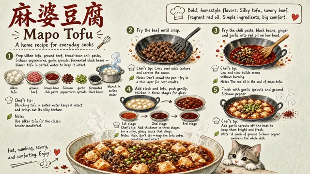
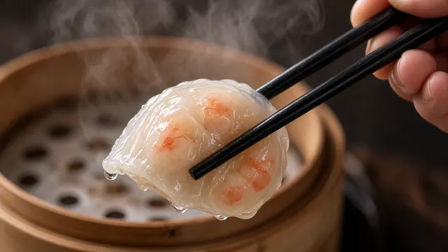

Coolcat
AI ART / PROMPTS
作品
人像
UI
关于
@minaoneday ↗
COOLCAT / GALLERY
#美食
4 件相关作品
夜市鱼糕摊 Night Market Fish Cake Stall
2026-09-27 · #夜市 #美食

麻婆豆腐手绘食谱 Mapo Tofu Illustrated Recipe
2026-09-27 · #食谱 #水彩
地标建筑冰棒 Landmark Popsicle
2026-09-27 · #创意 #地标

筷子夹水晶饺 Chopsticks Lifting a Crystal Dumpling
2026-09-27 · #微距 #手部